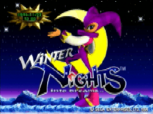
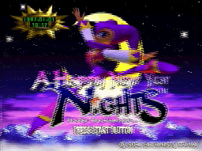
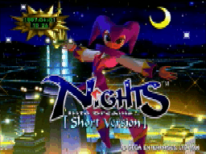
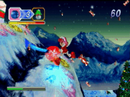

タイマー機能について
タイマー機能について

『クリスマスナイツ』
１１／２５〜１２／２５の期間にゲームを遊ぶとクリスマスナイツで遊べます。
クリスマスナイツではＢＧＭもジングルベル調になり
ぐっとクリスマスの雰囲気が盛り上がります。


この時期はナイツもうかれてサンタさんのように赤色に変わります。
『ウインターナイツ』
１１／１〜１１／２４、１２／２６〜１２／３１、１／１６〜２／２８の期間に
ゲームを遊ぶとウインターナイツで遊べます。
 
クリスマスも過ぎてナイツの色も普通にもどってますね。
『ハッピーニューイヤーナイツ』
１／１〜１／１５の期間にゲームを遊ぶとハッピーニューイヤーナイツで遊べます。
ハッピーニューイヤーナイツではエリオットもクラリスも
パーティスーツで着飾り新年を祝っています。


『ナイツショートバージョン』
３／１〜１０／３１の期間にゲームを遊ぶとナイツショートバージョンで遊べます。
ショートバージョンでは「ナイツ」と同じく春のスプリングバレーを楽しめます。



「クリスマスナイツ冬季限定版」では日付や時間によってさまざまな変化が楽しめます。
今回はその中の１部を紹介しますので他の多くの変化は実際に遊んで発見してください！

空に大きな満月が！

オーロラが空を飾っています。

雪の変わりにキャンディが降っているぞ！！（わかるかな？）

今度は三日月が降っている！
(c)SEGA 1996
このページはソニックチームが制作しています。

戻る